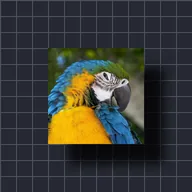

Bayangan Jatuh

Menggambar bayangan lembut dari bentuk lapisan di belakangnya, digeser dengan Offset X dan Offset Y.
Pengaturan
| Pengaturan | Jenis | Rentang | Default |
|---|---|---|---|
| Warna | Warna | – | #000000 |
| Opasitas | Angka | 0% hingga 100% | 60% |
| Kelembutan | Angka | 0 hingga 300 | 12 |
| Offset X | Angka | -2000 hingga 2000 | 12 |
| Offset Y | Angka | -2000 hingga 2000 | 12 |